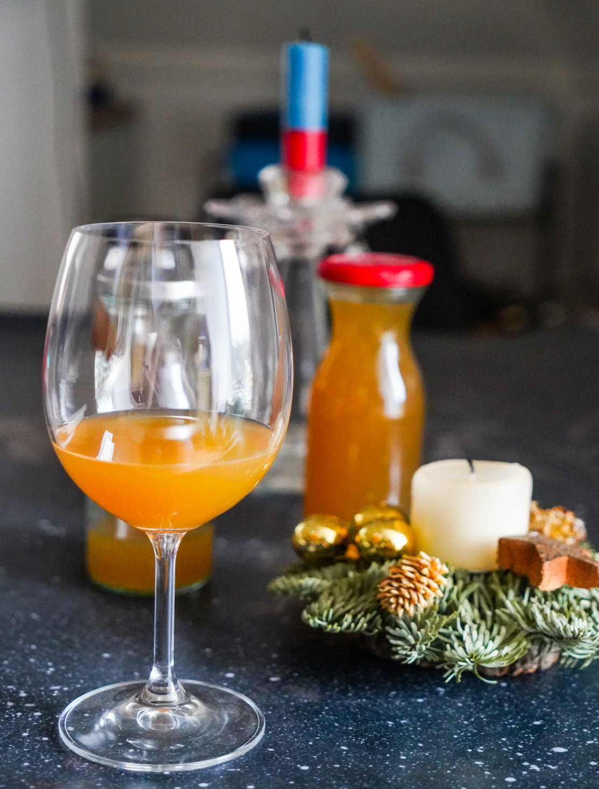

Рецепт от приглашённого гостя, специалиста по ферментации, Анны Дроздовой.
В качестве подсластителя вы можете использовать мёд или сахар. Если возьмёте коричневый сахар, он придаст напитку более тёмный цвет. Даже без подсластителя напиток будет натурально сладковатым.
Сырьё после окончания ферментации можно использовать повторно, добавив чуть меньше подсластителя, чем в первый раз, и готово будет уже на следующий день. При смешивании первой и второй порции получится идеально сбалансированный вкус.
Если на праздник вы хотите непременно тёплый глинтвейн, напиток можно немного подогреть, но при этом частично или полностью полезные пробиотические бактерии погибнут.
Для рецепта потребуется следующий инвентарь: стеклянная банка объёмом 1,8 л с крышкой; разделочная доска; нож; кухонные весы; столовая ложка; стеклянные бутылки с плотными крышками (бугельные, закручивающиеся).